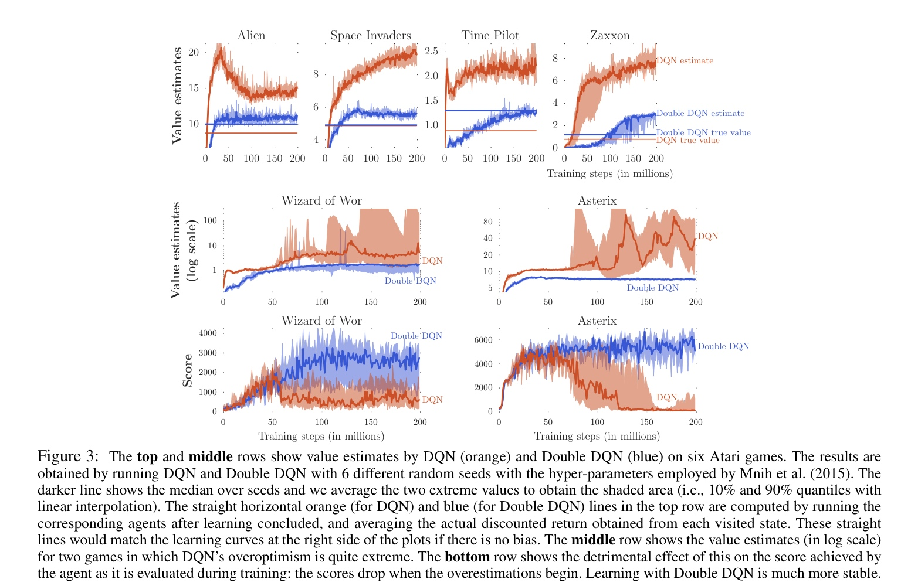

Doule DQN
文章名称为《Deep Reinforcement Learning with Double Q-learning》，旨在解决DQN训练过程中存在的过估计（Overestimating）问题。过度估计(Over Estimation)是由于计算Q值时候采取了max操作，使Q值的计算可能过早的向一个早期计算出的局部的最优Q值靠拢，导致出现大的偏差。导致其他较优的局部状态动作无法被迭代到，或者就算迭代到，也没有更新到高的Q值。这样也就产生了较大的偏差。
问了解决过估计的问题，文章提出Double Q-learning的方法，将动作的选择和动作的评估分别用不同的值函数来实现。
动作选择
在Q-learning的值函数更新中，目标网络为
在求解TD目标的时候，需要求解一个在下一状态的最优的动作a，使得最大，这便是动作选择。
动作评估
在Q-learning中，动作的选择和评估用同一套网络来实现，而Double Q-learning则不同，它使用了不同的值函数,TD目标如下：
上述公式，动作的选择用到的是网络，再选出最优动作后，动作评估部分用的是网络，
实验结果
文中对比了Double DQN以及DQN在六款不同的Atari游戏上的表现。 
参考文献
[1] Van Hasselt H, Guez A, Silver D. Deep reinforcement learning with double q-learning[J]. arXiv preprint arXiv:1509.06461, 2015. [2] 深入浅出强化学习:原理入门 / 郭宪，方勇纯编著. —北京:电子工业出版社，2018.1 ISBN 978-7-121-32918-0